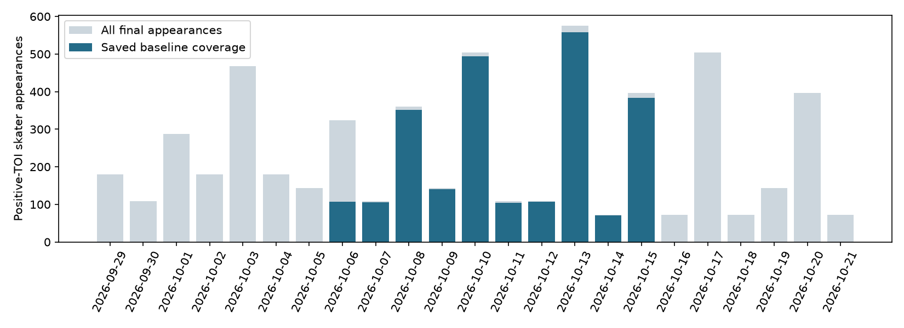
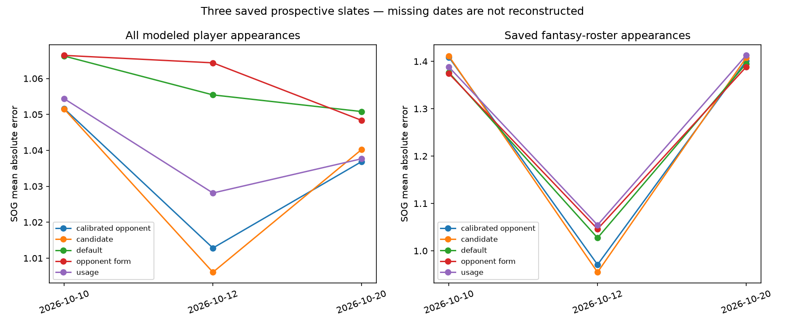

Forecast history through October 21
Tonight’s matchups · Fantasy report · October 20 results
153 completed games audited, with 5,507 positive-TOI skater appearances. Full daily-model comparisons remain 24 pregame games across October 10, 12 and 20. Neither October 21 game had a saved daily forecast. Tonight’s 12 games are frozen and archived, awaiting results.
Season and rolling 7/30-day scoreboard CSV · Archive method and limits · Latest season review · Every game and coverage gap
Calibrated opponent context retains the lowest all-player SOG error, but does not lead the fantasy subset. No model promotion. MAE is average absolute error in shots; lower is better. Counts below are category-specific, not independent samples.
Season forecast coverage

Completed comparison dates
The full daily-model cohort is unchanged; this chart remains the October 20 evaluation vintage.

Season SOG errors — full daily bundles
| level |
population |
model |
scored_rows |
games |
mae |
rmse |
bias |
| player |
all |
calibrated_opponent_sog_trial |
864 |
24 |
1.0416 |
1.3556 |
-0.0258 |
| player |
all |
candidate |
864 |
24 |
1.0425 |
1.3590 |
-0.0302 |
| player |
all |
default |
864 |
24 |
1.0583 |
1.3601 |
0.0904 |
| player |
all |
opponent_form_sog_trial |
864 |
24 |
1.0580 |
1.3572 |
0.0952 |
| player |
all |
usage_shot_context_trial |
864 |
24 |
1.0445 |
1.3571 |
-0.0426 |
| player |
saved_fantasy_roster |
calibrated_opponent_sog_trial |
179 |
24 |
1.3609 |
1.7663 |
-0.3548 |
| player |
saved_fantasy_roster |
candidate |
179 |
24 |
1.3635 |
1.7754 |
-0.3667 |
| player |
saved_fantasy_roster |
default |
179 |
24 |
1.3499 |
1.7431 |
-0.1773 |
| player |
saved_fantasy_roster |
opponent_form_sog_trial |
179 |
24 |
1.3477 |
1.7347 |
-0.1645 |
| player |
saved_fantasy_roster |
usage_shot_context_trial |
179 |
24 |
1.3658 |
1.7640 |
-0.3476 |
| team |
all |
calibrated_opponent_sog_trial |
48 |
24 |
4.2492 |
5.2821 |
-0.4423 |
| team |
all |
candidate |
48 |
24 |
4.2267 |
5.4377 |
-0.5240 |
| team |
all |
default |
48 |
24 |
4.4480 |
5.6529 |
1.6488 |
| team |
all |
opponent_form_sog_trial |
48 |
24 |
4.4316 |
5.5403 |
1.7371 |
| team |
all |
usage_shot_context_trial |
48 |
24 |
4.2619 |
5.1087 |
-0.7170 |
Prior expanded charts, paired uncertainty and export-only cohorts. The 12 October 17 publication-safe team/goalie games and older October 9 trials remain separate evidence tiers. Missing conditional outcomes are not scored as zero. Corrected actuals receive new archive versions; repeated issuances are not double-counted in this scoreboard.